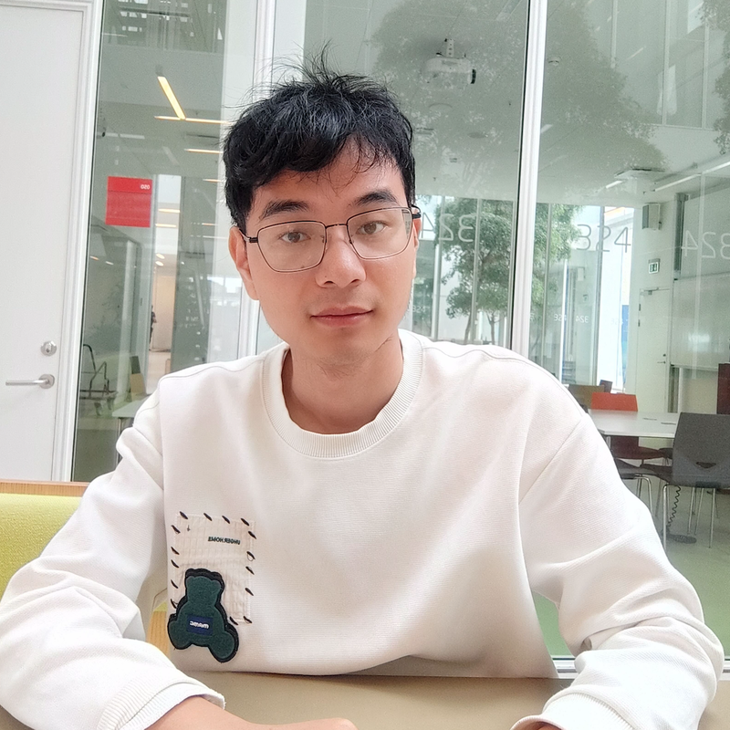

Learning series · October 2026
Video Generation from Scratch
A hands-on path from generative modeling fundamentals to video. The first chapter covers DDPM, DDIM, Flow Matching, and Reflow with code, real MNIST experiments, and sampling animations.
PhD Researcher • DTU | Generative AI & Computer Vision

I am a PhD researcher in Applied Mathematics and Computer Science at the Technical University of Denmark (DTU). My research is conducted at the Visual Computing section of DTU Compute, where I am supervised by Prof. Morten Rieger Hannemose, Prof. Anders Nymark Christensen, and Prof. Anders Bjorholm Dahl.
From June to September 2026, I was a Visiting PhD Researcher at the University of Hong Kong (HKU) in Prof. Lequan Yu’s lab, working on Agentic AI for Medical Image Generation.
I also serve as a Part-time Research Scientist at Retinalyze, researching deep learning methods for retinal fundus and OCT image analysis.
Previously, I earned my Master’s degree in Computer Engineering on a full scholarship at the Budapest University of Technology and Economics (BME) and worked as a Research Assistant (June 2019–August 2020) in the Neural Information Processing Group (NIPG) at Eötvös Loránd University (ELTE).
Google Scholar metrics as of 17 October 2026.
I develop efficient and controllable visual generative models, with a focus on diffusion and flow-based modeling. My work spans controllable image generation, adaptive sampling, visual counterfactual explanations, and image editing.
I am also interested in compact image and video generation, generative model distillation, and predictive world models.
Learning series · October 2026
A hands-on path from generative modeling fundamentals to video. The first chapter covers DDPM, DDIM, Flow Matching, and Reflow with code, real MNIST experiments, and sampling animations.
Top Reviewer, NeurIPS 2026
Technical Program Committee for ISBI 2026 and 2027; Program Committee for ICONIP 2023
Conferences: ICLR 2027, ISBI 2027, CVPR 2026, NeurIPS 2026, MICCAI 2026, BMVC 2026, MICCAI 2025, ISBI 2025, ICPR 2024
Journals: IEEE Transactions on Medical Imaging, Expert Systems With Applications, Biomedical Signal Processing and Control, IEEE Signal Processing Letters
Introductory and advanced courses on computer vision with deep learning at Technical University of Denmark.
All recorded sources since 18 July 2026.
Loading historical visitor locations…